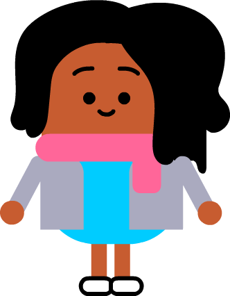

<div id='prompt' class='text'>
    Here we are backstage, where our creative crew is already hard at work. It looks like they’ve found their first primary source, but there seems to be some confusion about what they should do with it.
</div>

<div id='game'>
  <!-- melody -->
  
  <!-- feedback -->
  <div id ='feedback'>
  </div>
  <div>
    <div class='headers' id='title'>
      SOURCE
    </div>
    
    <!-- image container -->
    <div class='image-container'>
    </div>
    <!-- orq containers -->
    <input type="button" name="observationButton" id="observation" class="container o" aria-label="classify as observation">
    <div class='orq o'>
      Observation
    </div>
    <input type="button" name="reflectionButton" id="reflection" class="container r" aria-label="classify as reflection">
    <div class='orq r'>
      Reflection
    </div>
    <input type="button" name="questionButton" id="question" class="container q" aria-label="classify as question">
    <div class='orq q'>
      Question
    </div>
  </div>
  <div id='speaker'>
  </div>
  <div id='dialog'>
    <div id='speech-bubble'>
    </div>
  </div>
  <!-- character container -->
  <div class= 'character-container'>
    
    
    
    
    
  </div>
</div>
